Key Areas (You Must Build Things!)
Library
 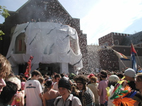
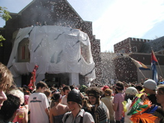


The library is frequently, though not always, turned into a face of Mouth of Hell of some kind. Gregory MacNaughton is particularly helpful if you're wanting to do a library facade project.
Blue Bridge

The Blue Bridge is an absolute must, but it is also long. Very long, longer than you think. You will need a lot of supplies and, preferably, a lot of people. The cheapo metal garden arches that you can buy from certain evil online retailers fit the bridge really well. You need to make sure you have clearance in the middle of 6.5', so no central dangles. Also, it can get windy or rain. It's really important to secure things so they don't end up in the canyon.
The Vent
 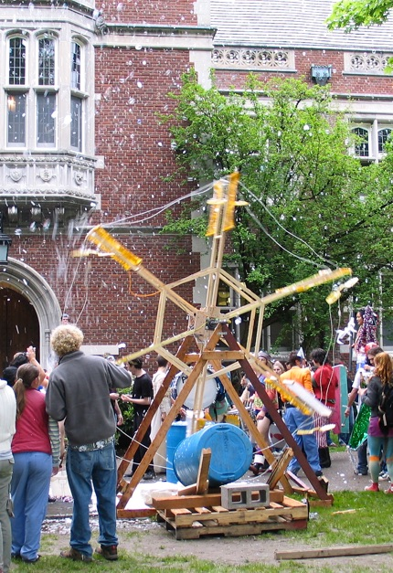
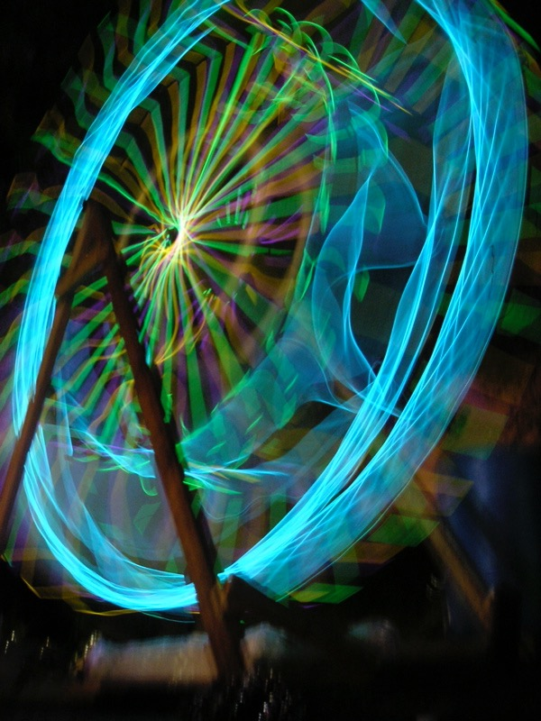
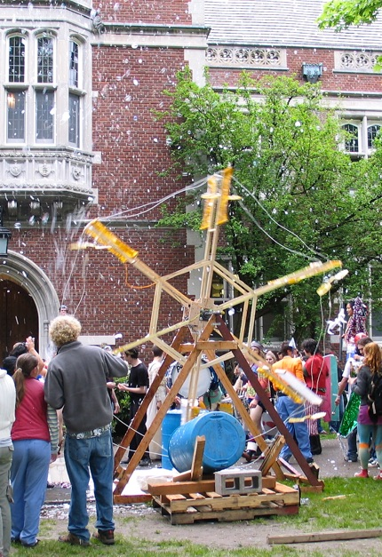
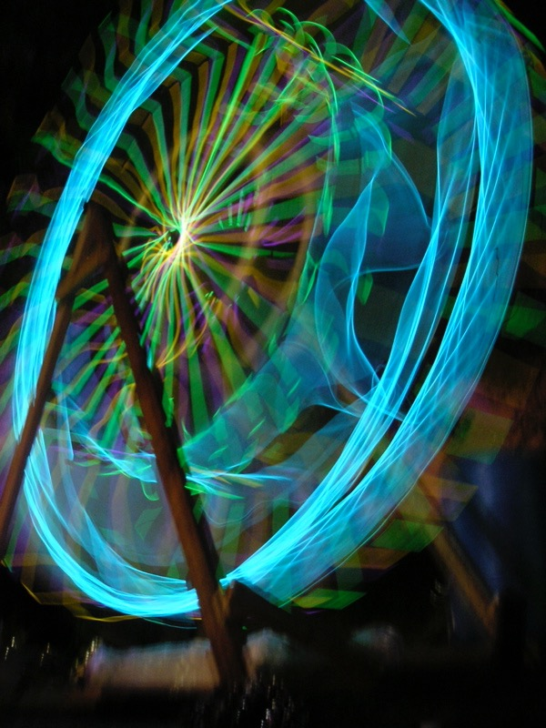

 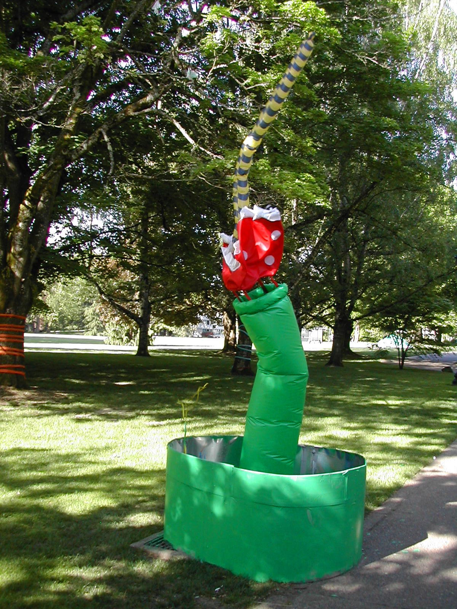
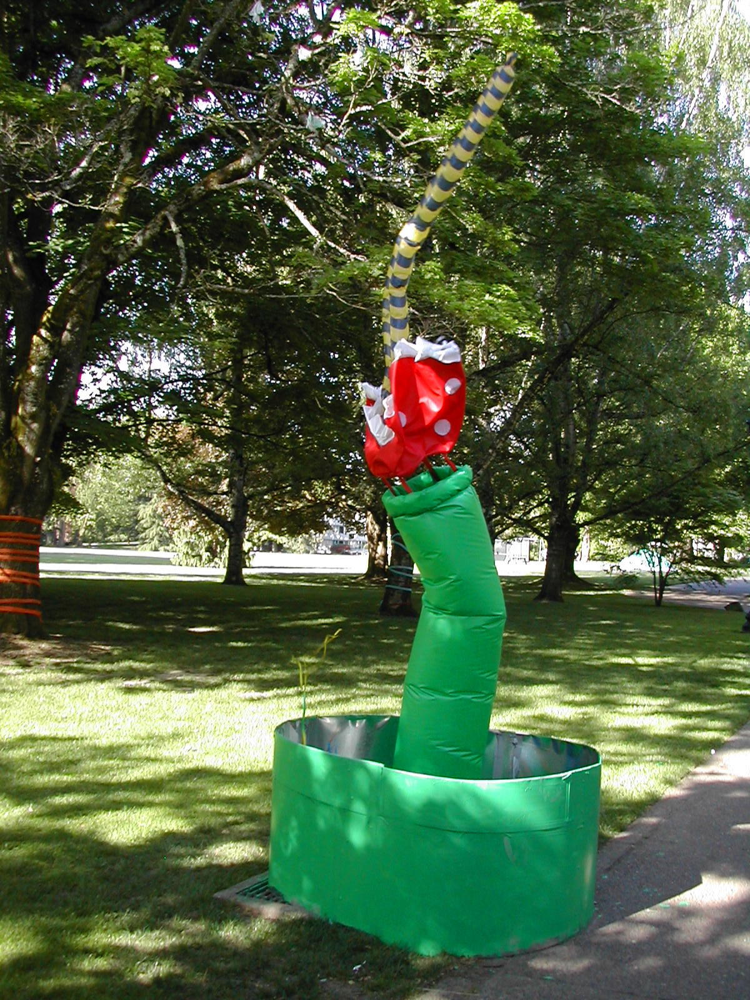
My personal favorite spot. Dynamic sculptures are coolest. Bubble ferris wheel is the all time great--bubbles by day, glowsticks by night. Inflatable sculptures need to make sure they don't fully cover the vent because it still needs to do its venting job. Large tent-like structures will stay nice and warm if it's a cold year.
Lawn Letters


The lowest hanging fruit, but a very fun fruit. Plywood, 2x4s, hinges, and white paint. They typically start as an on-theme phrase and then turn into fuck words. Set them up on the south lawn.
Other Recurring Projects
The CHVNK Tower

 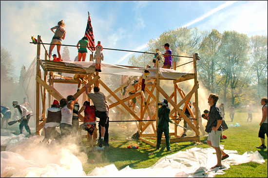
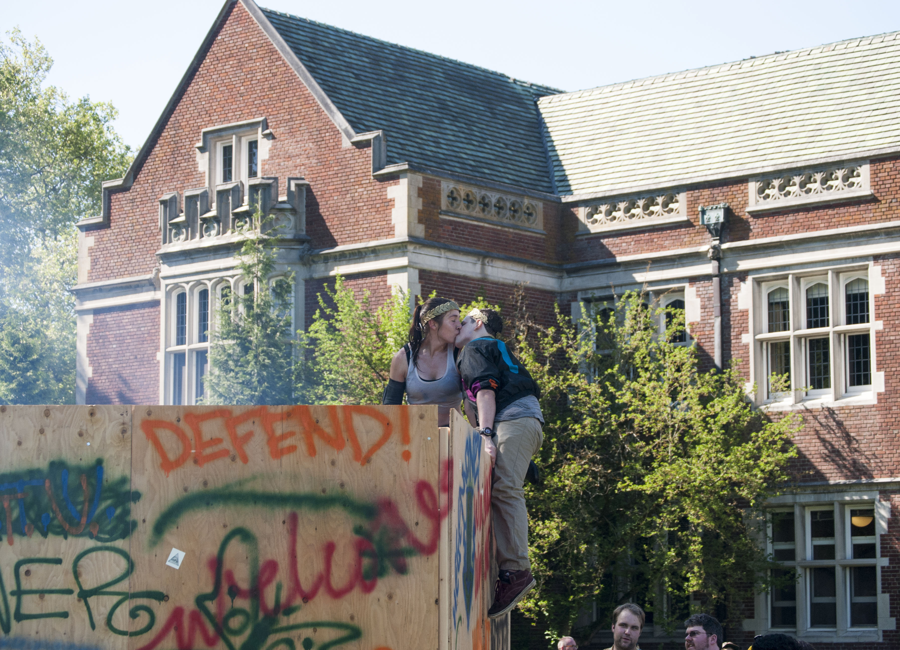
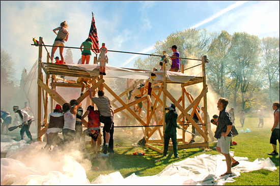
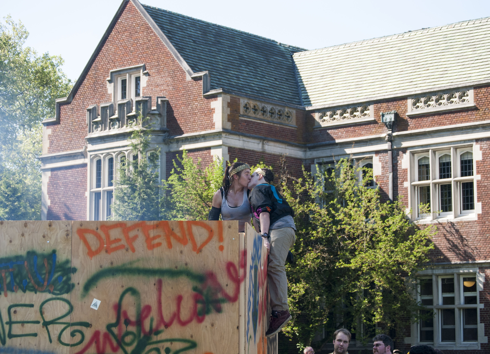


Technically, you're not NOT allowed to do a CHVNK tower, you just can't do them like we used to. In the times of Olde Reed, it was built with the splinteriest plywood and rustiest nails and you tore it apart with your bare hands while CHVNK defenders pommeled you with American Gladiator weapons. There were fewer injuries than you might expect. It was nice to have a cathartic destructive event right after thesis parade. Maybe you can build something with cardboard, pillows, and pool noodles? It's the destruction that's the fun part, not the splinters.
The Maze
 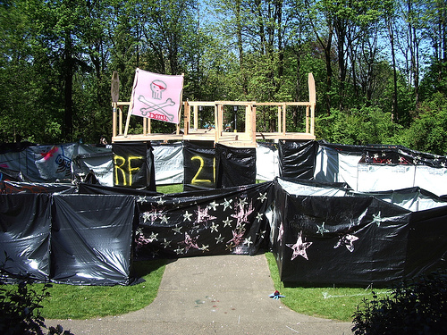
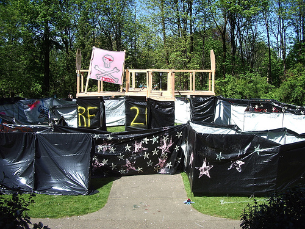


The Maze has taken many different forms over the years, from methodical grid to saggy trashbag mudpit, but it's still always fun. It used to always be between the Blue Bridge and Eliot, but I believe there are concerns for the grass. It does get muddy. It's a big undertaking, even more so than the Blue Bridge, so plan ahead and have a team.
Glow Opera

 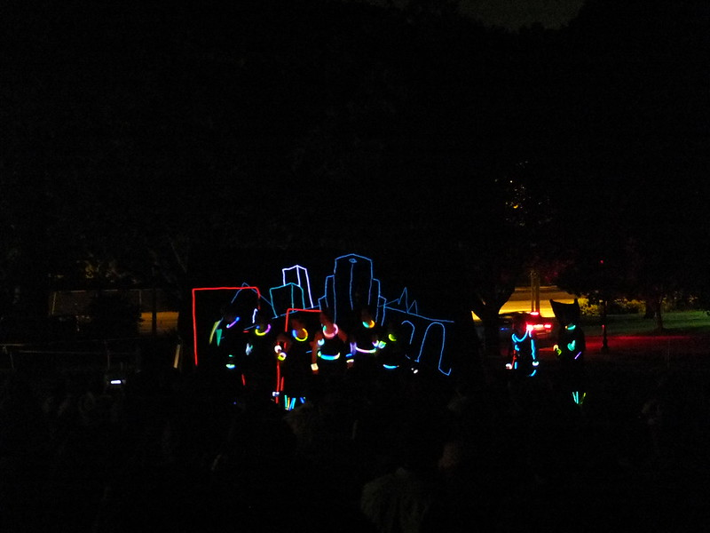
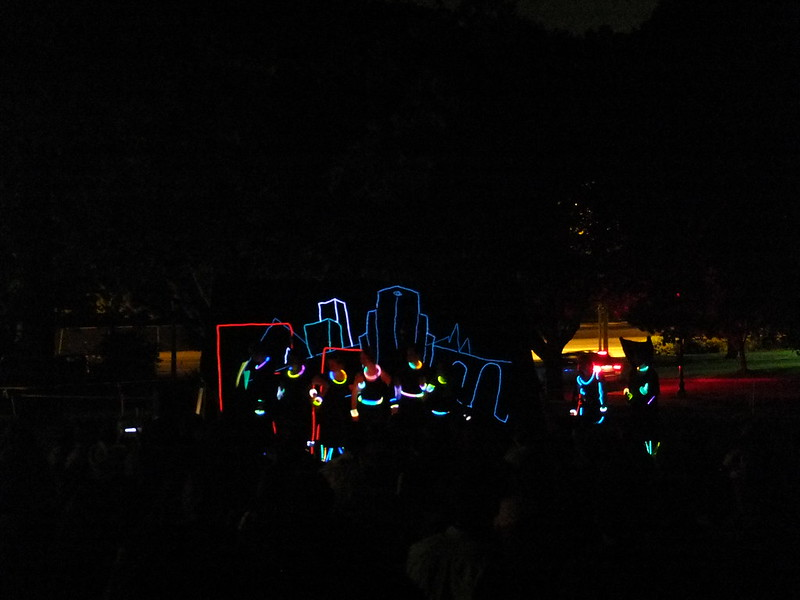
I'm dying for this to come back. We used to cover ourselves in glowsticks or LEDS and put on a play in the dark. Sometimes it's a musical, sometimes it's a mashup (like Big Lebowski + Tron), sometimes just music. You'll love it if you aren't on drugs, and you'll really love it if you are. Here's a taste.
The Mailroom

Unfortunately, I don't have a wealth of pictures here. But the GCC basement outside the mailroom is a perfect little nook for immersive decorating. When done well, it's its own little world. The best was 8-bit Renn Fayre when it was Bowser's Castle. Send me pictures if you have them!
Vehicles


 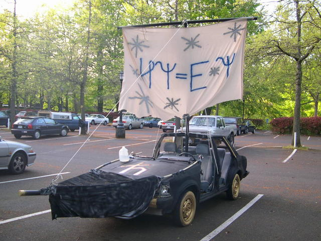
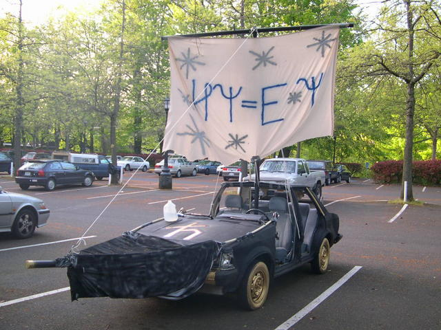
We used to have motorized couches, but motors are no longer allowed. But people-powered vehicles can be even better.
Balloon Room
 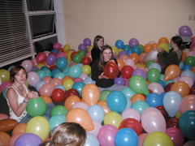
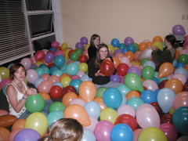

This is best set up in the smallest GCC room (I think that's GCC-A). In the past, we've had the room be open and stocked with supplies for a few days before Renn Fayre and people will stop on their way to and from Commons and blow up a few balloons. In my day, we had the balloons up to our necks, so get to blowing.
Hum Lecture Snow

Someone drives a truck up to Mt. Hood and loads it up with snow. Wait for Hum lecture to start. Unload snow. Throw a few snowballs from balcony during lecture. Then a big snowball fight when lecture ends.